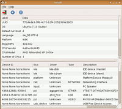

Smolt
Archivierte Anleitung
Dieser Artikel wurde archiviert, da er - oder Teile daraus - nur noch unter einer älteren Ubuntu-Version nutzbar ist. Diese Anleitung wird vom Wiki-Team weder auf Richtigkeit überprüft noch anderweitig gepflegt. Zusätzlich wurde der Artikel für weitere Änderungen gesperrt.
Zum Verständnis dieses Artikels sind folgende Seiten hilfreich:
Smolt  ist ein Programm zur Erstellung von Hardware-Profilen und stammt aus dem Fedora Project
ist ein Programm zur Erstellung von Hardware-Profilen und stammt aus dem Fedora Project  . Mittlerweile ist Smolt aber auch für Debian, Ubuntu und Suse verfügbar.
. Mittlerweile ist Smolt aber auch für Debian, Ubuntu und Suse verfügbar.
Die Hardware-Profile werden als Webseite erstellt und in die Datenbank des Smolt-Servers aufgenommen. Einzelne Hardware-Komponenten werden automatisch mit einer Seite im Smolt Wiki verknüpft und können dort ausführlich beschrieben werden. Neben reinen Statistiken zur Verbreitung von Hardware-Komponenten unter Linux-Nutzern soll auf diesem Weg eine große Hardware-Datenbank entstehen. Natürlich kann ein solches Hardware-Profil auch genutzt werden, um bei einem Fehler-Bericht als Anhang verlinkt zu werden.
Installation¶
Die benötigten Pakete sind derzeit noch nicht über eine Paketquelle verfügbar und müssen einzeln installiert werden.
Hinweis!
Fremdpakete können das System gefährden.
Folgende Pakete müssen von xyzz.kexik.net heruntergeladen und installiert [1] werden:
urlgrabber
smolt

Bedienung¶
Unabhängig von der Bedienung über das grafische Frontend oder im Terminal wird ein Profil erstellt und an den Smolt-Server übermittelt. Jedes Profil wird anhand einer UUID identifiziert. Diese UUID wird in der Datei /etc/sysconfig/hw-uuid gesichert.
Smolt-Gui¶
Für die grafische Bedienoberfläche Smolt-Gui wird kein Eintrag im Menü angelegt, dies kann man bei Bedarf selber nachholen [3]. Der Befehl zum Starten des Programms lautet:
python /usr/share/smolt/client/smoltGui.py
Über den Eintrag "File -> Send" in der Menüleiste, über das Pfeilsymbol in der Werkzeugleiste oder über die Tastenkombination Strg + S kann das Profil an den Server übermittelt werden. Anschließend erfährt man die UUID des Profils.
Das Löschen von Profilen ist über Smolt-Gui nicht möglich, hierzu muss die Konsole bemüht werden.
Datenschutz¶
Benutzer der grafischen Oberfläche können unter "Help -> Show Privacy Policy" die Datenschutz-Richtlinien des Projekts nachlesen; ansonsten sind diese in der Datei /usr/share/doc/packages/smolt/PrivacyPolicy zu finden.
- Erstellt mit Inyoka
-
 2004 – 2017 ubuntuusers.de • Einige Rechte vorbehalten
2004 – 2017 ubuntuusers.de • Einige Rechte vorbehalten
Lizenz • Kontakt • Datenschutz • Impressum • Serverstatus -
Serverhousing gespendet von